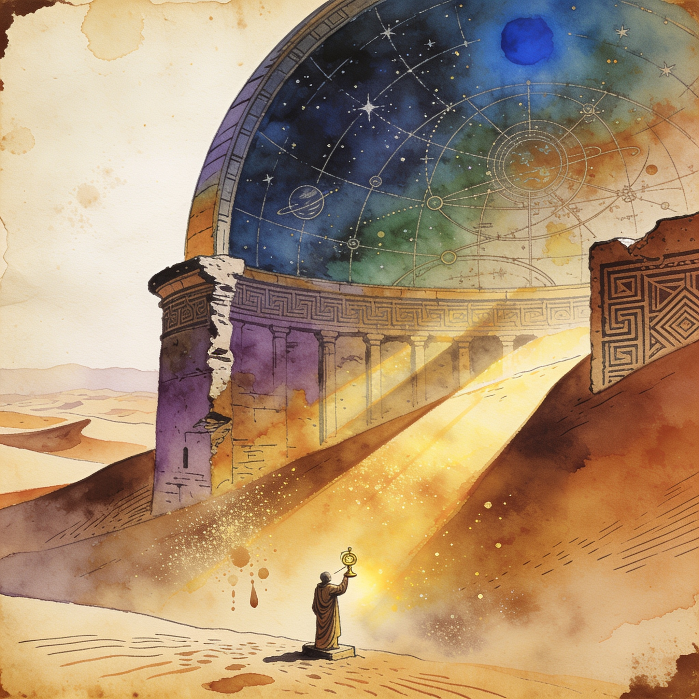

Local-first LLM client
Lab is a local-first, serverless browser client for LLMs
Lab launches as a local-first, serverless browser client for running LLMs, pitched as a chat and experimentation UI that targets local inference workflows with no server component. It stands out as the most general-purpose new interface in a window otherwise crowded with niche agent tooling.